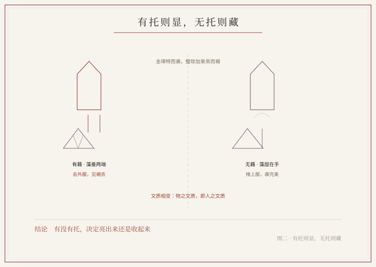

曲礼下 · 二·六 · 第 129 课
执玉之时，玉下有承托之藻。藻垂在外，叫「有藉」，此时人去外服、露出裼衣，叫「裼」；藻屈在手中，叫「无藉」，此时掩上外服，叫「袭」。
说什么事：执玉，其有藉者则裼，无藉者则袭。
落在哪一层：礼，兼及仪。藉是物的托，裼袭是人的文质。
为何编在此位：前五节讲人的身体，此节第一次把物（玉与藻）与人的衣（裼与袭）放在一处讲——礼让物与人同频。
【经】執玉，其有藉者則裼，無藉者則襲。
【注】藉，藻也。裼，襲，文質相變耳。有藻為文，裼見美亦文。無藻為質，襲充美亦質。圭璋特而襲，璧琮加束帛而裼，亦是也。
【疏】……凡执玉之时，必有其藻，以承於玉。若尽饰见美之时，必垂藻於两端，令垂向於下，谓之「有藉」。当时所执之人，则去体上外服，以见在内裼衣，故云「有藉者则裼」也。其事质充美之时，承玉之藻，不使下垂，屈而在手，谓之「无藉」。当时所执之人，则掩其上服，袭盖裼衣，谓之「无藉者则袭」。
藉 注「藉，藻也」。承玉之托，以韦衣木而画采，或兼绚组垂之。
藻 《释文》「藻音早，本又作缫」。承玉之饰。
裼 《释文》「星历反」。去外服，见内之裼衣，左袒而露美。
袭 掩上服，充而不露。
文质相变 注四字，是全节之枢：物有文质，人亦有文质，二者同步而变。
圭璋特／璧琮加束帛 注语。圭璋独达而无承，故袭；璧琮以束帛为承，故裼。
执玉的时候，若玉下的藻垂在两端（有藉），人就敞衣露出裼衣（裼）；若藻屈在手中（无藉），人就掩上外服（袭）。
玉有托则显，无托则藏；人亦然。有藉而裼，是「有凭据的展示」；无藉而袭，是「无凭据的收敛」。礼在此把展示与收敛的开关，交给了物的形制，而不是人的心情。
第一层 藉是玉的托 玉不能凭空而执，必有承。托之显隐，先于人之显隐。
第二层 文质相变 注「有藻为文，裼见美亦文；无藻为质，袭充美亦质」。这是先秦文质论的实物版：文与质不是两种风格，是同一件事的两面。
第三层 圭璋特则袭 圭璋是宝物，独达而不加束帛，故必覆藏。宝愈贵，愈不轻露。
第四层 裼袭不相因 《表记》有「裼袭不相因」之文：执龟玉者袭，受享者裼，各随其事，不相沿袭。可见此节之裼袭不是礼仪进程中的一节，而是「随物而定」的开关。
与今日何干 要不要把东西亮出来，不看你想不想亮，看有没有「托」——有没有正当的由头、合适的场合、可承的凭据。没有托的时候亮，就是失礼。
| 左 | 右 |
|---|---|
| 有藉 | 藻垂两端，玉有所承 |
| 则裼 | 去外服，见裼衣 |
| 无藉 | 藻屈在手，玉无下垂之托 |
| 则袭 | 掩上服，充而不露 |
| 圭璋特而袭 | 宝无承，故藏 |
| 璧琮加束帛而裼 | 有帛为承，故显 |
| 文质相变 | 物之文质，即人之文质 |
画左右两组并置：左侧一片圭形玉版，玉下两条细带自两端垂下、垂过玉底，旁边一件外衣敞开、露出里面一层浅色的内衣；右侧同样一片圭形玉版，玉下细带向上屈起、收在持玉的两指之间，旁边一件外衣严整掩合、不见内衣。两组之间画一道细竖线分隔。不画人面、不写文字。赭色只用在左侧那两条垂下的细带。
